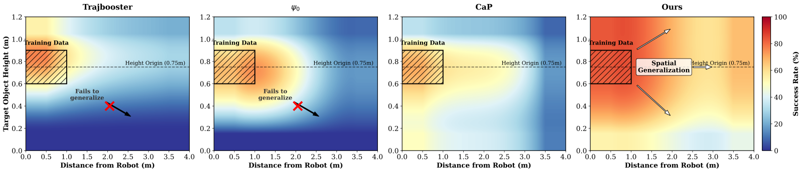
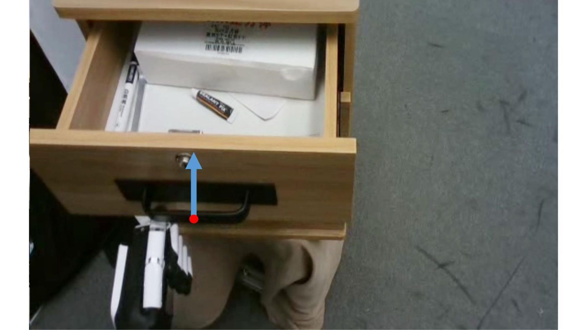
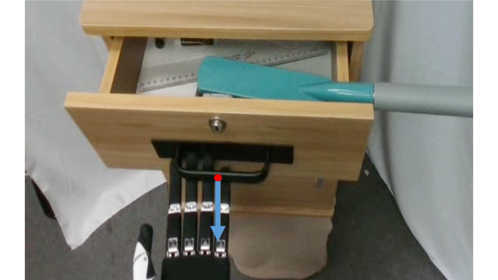
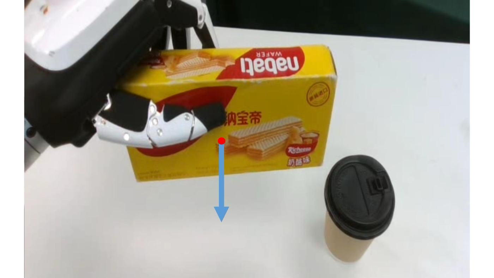
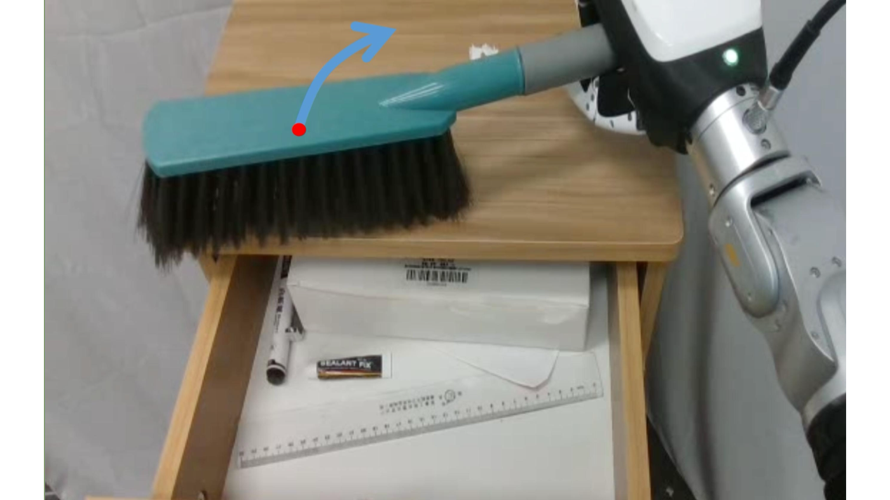

Method Framework

via Active Spatial Brain and
Generalizable Action Cerebellum
A framework that enables generalizable humanoid whole-body dexterous manipulation
without relying on any robot-specific data.
Reachability Analysis
The four videos below demonstrate operations under different object positions and heights. The heatmap underneath compares reachability across different methods.

Long-Horizon Task
This long-horizon task demonstrates how the system can autonomously plan, invoke active visual perception, and execute manipulation actions to complete user-provided instructions that contain multiple subtasks.
Planning
The planner leverages execution feedback to enable closed-loop control.
Trajectory Generation
Action primitives are incorporated to generate executable manipulation trajectories.

Push

Pull

Place

Rotate
Spatial Understanding
The two tasks below demonstrate obstacle avoidance and active exploration for spatial understanding.
In this paper, we explore spatial-aware humanoid whole-body manipulation task. Compared with tabletop settings, this task poses two key challenges: 1) Spatial understanding is challenging in complex 3D environments with diverse spatial relations. 2) Action generation is difficult to generalize, as limited and costly real-robot data restricts data-driven models generalization. To address these challenges, we propose a generalizable humanoid loco-manipulation framework that leverages the spatial perception and action generation capabilities of multi-agent large models. Specifically, our framework includes two components: Active Spatial Brain for active spatial perception and decision-making, and Generalizable Action Cerebellum for executable robot action generation. The first component actively perceives the spatial scene and makes decisions on task planning and subtask decomposition. The second component generate executable robot actions based on the decisions made by the first module without needs of task-specific real robot data. To benchmark our framework, we design a set of spatial manipulation tasks from two perspectives: evaluating spatial perception and understanding, and assessing real-robot task performance. The results demonstrate strong performance on both aspects across diverse tasks and environments.
@misc{liang2026humanoid,
title={Humanoid Whole-Body Manipulation via Active Spatial Brain and Generalizable Action Cerebellum},
author={Zhizhao Liang and Yi-Lin Wei and Xuhang Chen and Mu Lin and Yi-Xiang He and Zhexi Luo and Jun-Hui Liu and Kun-Yu Lin and Wei-Shi Zheng},
year={2026},
archivePrefix={arXiv},
primaryClass={cs.RO},
eprint={TODO},
url={https://arxiv.org/abs/TODO}
}